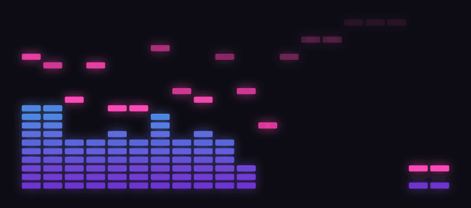

RetroWave
A retro LED spectrum analyzer for your Mac. It listens to whatever is playing and draws it as a glowing wall of light, floating over your desktop.

Any audio, no setup
Uses the system audio tap, so it works with every app. Nothing is recorded or stored.
20 colour modes
Classic tri-bar and meter, amber VFD, green phosphor, Winamp, and synthwave sets: Neon Sunset, Neon Grid, Vaporwave.
Peak hold and beat flash
Fast falling or floating peaks, a flash on the beat, auto-gain, and a frequency sweep when the music stops.
Lives on your desktop
Transparent, resizable, always on top if you like, click-through if you like. Menu-bar app, no Dock icon.
Install
Requires macOS 14.2 or later. Universal binary, signed and notarised.
brew install --cask craigday/retrowave/retrowave
Or step by step. Recent Homebrew versions ask you to trust a third-party tap once:
brew tap craigday/retrowave brew trust craigday/retrowave brew install --cask retrowave
Without Homebrew, download the zip and drag RetroWave into Applications. On first launch macOS asks to allow system audio recording.
Support
Found a bug or want a feature? Open an issue. A star on GitHub helps RetroWave reach the official Homebrew cask list.